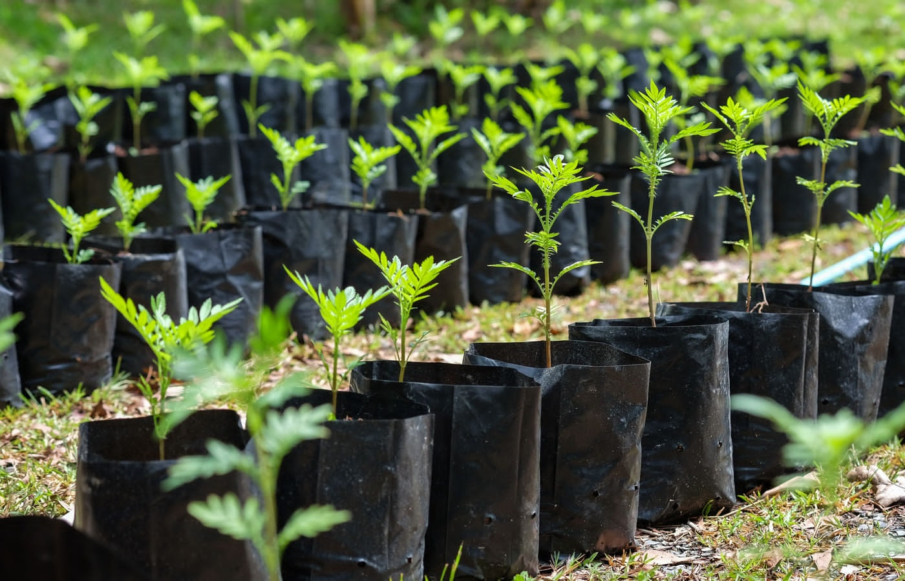
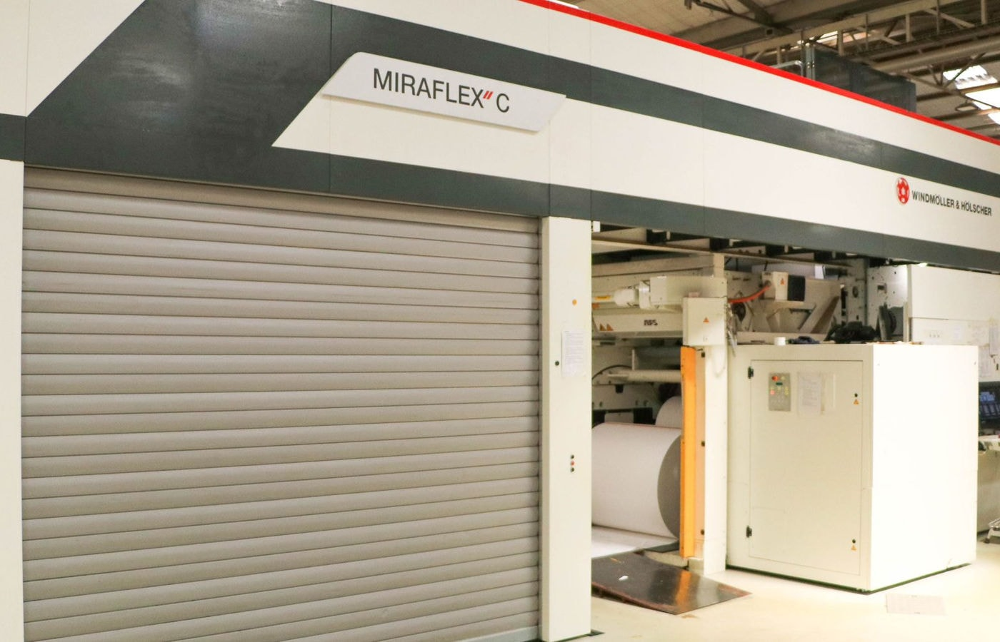

Packaging that gives back.
Doing right by our people, our customers and our planet.
For thirty years we've grown alongside Nairobi. Responsibility isn't a programme bolted on — it's how we run the plant, hire our team and treat what we put back into the world.
Held to international standard
Quality management — consistent product and process control.
Occupational health & safety for everyone on our floor.
Chain-of-custody — paper from responsibly managed forests.
Food safety system certification for food-grade packaging.

Solar-powered manufacturing
Our plant runs on an on-site solar installation, cutting grid dependence and emissions. Sunshine over Nairobi now helps power every bag we make.
Effluent Treatment Plant (ETP)
Ink-water and waste-water from printing and lamination are carefully treated on site before responsible disposal — protecting the waterways around us.

Local Nairobi employment
We hire, train and grow our team locally — over 300 jobs supporting families across the city, with a safe, ISO 45001-certified workplace.
with KEPRO.
As a member of the Kenya Extended Producer Responsibility Organisation, we take responsibility for our packaging beyond the point of sale — supporting collection, recovery and recycling so our products don't end their life as waste.